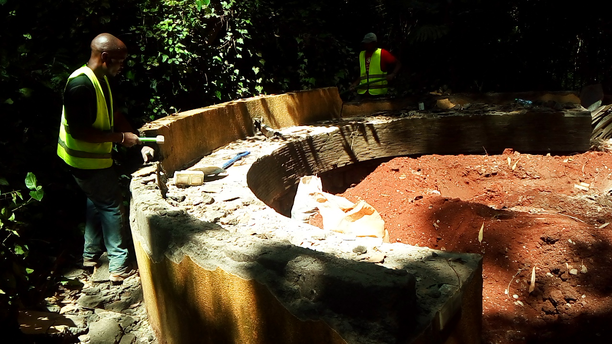

1. Mucheru World of Golf — Dam Works, Clubhouse Profiling & Greens 1–3
Front loader & backhoe earthmoving, Dam 1 murram haulage, Dam 2 excavation, green foundation work, PVC irrigation prep, and greenhouse wind damage
- Front Loader Arrival: The front loader arrived on site at 10:00 AM and immediately commenced digging the soil profile hole for the clubhouse foundation assessment.
- Dam 1 Levelling & Murram Collection: The front loader continued levelling Dam 1, gathering murram from the basin for redistribution across the project.
- Murram Haulage: Five lorry loads of murram excavated from Dam 1 were transported to the ground area near the clubhouse for stockpiling and future use.
- Backhoe Dam Levelling: A yellow XGMA backhoe loader was deployed to level the dam basin floor, leaving parallel bucket-grade lines across the excavated surface.
- Dam 2 Excavation Progress: Excavation of the 2nd Dam reached approximately 60% completion, with a Sunward excavator and tipper trucks operating across the basin.
- Soil Dumping & Haulage: Excavated spoil was loaded onto lorries and dumped across designated low-lying ground to establish smooth contours — totalling 82 haulage trips for the day.
- Foundation Breaking: Crews broke through existing foundation layers within the dam excavation zone to reach the required murram stratum.
- Active Dam Digging: Continuous excavator bucket work deepened the basin walls, exposing distinct red-soil and murram geological layers.
| Equipment | Operating Hours | Primary Task |
|---|---|---|
| Excavator | 9 Hours 51 Minutes | Dam 2 digging, soil loading & dumping |
| Backhoe Loader | 6 Hours 53 Minutes | Dam levelling, murram gathering & profiling |
| Total Haulage Trips | 82 Trips | Murram & excavated soil transport |
- Green Foundation Work: Construction progress continued on Greens 1, 2, and 3, including sub-base preparation and material placement.
- Red Soil Levelling — Green 3: Crews levelled red topsoil across Green Number 3 to establish the growing surface profile.
- PVC Pipe Measurements & Slitting: Orange PVC irrigation pipes were measured, cut, and slit at regular intervals using an angle grinder in preparation for sub-surface drainage installation.
- Wind Damage Incident: Strong winds tore through the greenhouse plastic covering, ripping large sections from the metal hoop frame and exposing the interior to the elements.
⚠️ Greenhouse Covering Requires Repair
Multiple large tears and detached plastic sheets were observed on the greenhouse roof and sidewalls. Repair or replacement of the covering material is needed before the next weather event.
📷 Mucheru World of Golf Visual Documentation

Clubhouse Soil Profile Test Pit
Deep vertical trench excavated by front loader showing clean-cut soil layers for clubhouse foundation profiling.

XGMA Backhoe Loader — Site Standby
Yellow XGMA 765N backhoe loader with front bucket lowered and rear arm folded, parked on dry grass near tree line.

Backhoe Levelling Dam Basin Floor
XGMA backhoe actively grading the wide dam excavation floor, leaving parallel horizontal bucket marks across the surface.

Backhoe Active Levelling Inside Dam
Backhoe loader pushing and levelling murram inside the dam bowl; tire tracks and dust visible on the basin floor.

Dam 2 Excavation — Excavator & Lorries
Sunward teal excavator loading soil with white, yellow, and blue tipper trucks lined up at the Dam 2 haulage zone.

Dam 2 Basin — End-of-Day Overview
Broad perspective of the excavated Dam 2 reservoir showing sloped embankments and spoil mound at twilight.

Dam 2 Red-Soil Wall Excavation
Steep tiered dam walls exposing red murram strata; perimeter fence and white pickup visible on the access road above.

PVC Pipes Measured & Slitted
Bundle of orange PVC irrigation pipes with uniform longitudinal slits cut at regular intervals for drainage installation.

PVC Pipe Slitting with Angle Grinder
Worker in blue overalls cutting slits into long orange PVC pipe using a handheld angle grinder beside a stacked pipe bundle.

Greenhouse Roof — Wind Tear Damage
Large sections of white greenhouse plastic torn from the central peak, flapping open and exposing the metal hoop frame to sky.

Greenhouse Sidewall — Wind Shredding
Close-up of shredded greenhouse sidewall plastic with jagged tears; cypress tree line visible through the damaged opening.
2. Chaka Farms — Veterinary Care, Dairy, Grounds & Canine Training
Veterinary injections & deworming, dairy milking logs, crop & flower irrigation, compound maintenance, and canine obedience training
- Veterinary Attendance: A veterinarian visited Chaka Farms to administer injections and deworming treatment to the goats and cattle herd.
- Selective Deworming: Deworming was specifically administered to cows that are not in the milking rotation, ensuring treatment without affecting dairy production schedules.
| Session | Morning | Evening | Total Daily Yield |
|---|---|---|---|
| Milk Yield | 4 Litres | 3 Litres | 7 Litres |
- Flower & Planted Grass Watering: Flowers and newly planted grass areas were irrigated to maintain moisture levels during the dry season.
- Crop Watering: Field crops received scheduled watering to support growth through the dry period.
- General Compound Cleanliness: Routine sweeping, litter collection, and tidying across farm compound areas.
- Gardening: Garden bed maintenance including weeding and plant care across landscaped zones.
- Compound Grass Maintenance: Lawn mowing, edging, and general grass upkeep on compound turf areas.
- Kennel Manners & Patience: Structured training sessions focused on calm kennel behaviour, waiting commands, and impulse control.
- Off-Leash Walking & Goat Socialization: Dogs exercised off-leash alongside grazing goats, building social tolerance and controlled interaction during pasture walks.
- Patience & Obedience Drills: Reinforcement of sit, stay, and patience commands to improve overall obedience and handler responsiveness.
- Office TV Collection: Mr. Maina collected the office television for professional framing.
- Staff Reporting: Jackie Kamau reported on duty as assistant to Gladys.
📷 Chaka Farms Visual Documentation

Veterinary Injection — Calf Treatment
Vet in grey jacket administering injection to a dark-brown calf restrained by a Chaka Farms worker in green coveralls.

Calf in Treatment Pen
Black-and-white calf standing in a rustic wooden livestock pen following veterinary attendance.

Calf Deworming Session
Light-tan calf tethered to a green post while vet in blue hooded jacket and rubber boots attends in the pen.
.jpeg)
Planted Grass Irrigation
Water stream from sprinkler soaking a straw-mulched grass field with emerging green patches under cypress tree line.

Crop & Seedling Watering
Green garden hose watering young plants on straw-mulched reddish soil with tilled field and grazing cattle in background.

Office TV Collected for Framing
Mr. Maina and assistant loading the office television into a red car parked on the driveway for professional framing.
3. Kabete Residence — Painting, Tank Slab & Fireplace Demolition
Main house shelf painting, downstairs grill paintwork, water storage tank slab pour, outdoor fireplace demolition, and domestic pet care
- Main House Shelf Painted: A worker on a ladder completed painting the main house shelf area above the stone-walled wooden door entrance.
- Downstairs Grill Painting: Black metal handrail and grillwork alongside the outdoor stone staircase received a fresh coat of paint, with protective cloth laid on the steps.
- Concrete Mixing & Slab Pour: Masonry crew manually mixed ballast, cement, and sand on site and began laying the main house water storage tank foundation slab.
- Slab Compaction: A concrete vibrator was used to compact and firm the freshly poured wet slab surface for structural integrity.
✅ Tank Slab Pour Underway
Main house storage tank foundation slab mixing, pouring, and vibration compaction actively progressing on site.
- Fireplace Structure Demolition: Workers dismantled the circular outdoor fireplace seating wall using sledgehammers and crowbars, breaking down the stone-clad masonry structure.
- Foundation Excavation: Red soil was excavated from within the circular fireplace pit to clear the site for future reconstruction work.
- Evening Feeding: Golden retriever Ajabu and resident cats received their evening meals on the terracotta tiled veranda and interior floor.
📷 Kabete Residence Visual Documentation

Main House Shelf & Overhang Painting
Worker in red paint-splattered coveralls on ladder painting the tiled overhang and shelf area above the stone-walled wooden door.
.jpeg)
Downstairs Grill & Handrail Painting
Worker in red overalls painting black metal handrail and grill alongside stone steps, with white protective cloth on stair treads.

Tank Slab — Concrete Mixing
Four workers in safety vests manually mixing ballast and cement with shovels beside Blue Triangle cement bags near stone wall foundation.

Slab Vibration & Compaction
Worker in tan coveralls squatting over freshly poured wet concrete, using a vibrator to compact the tank slab surface.

Fireplace Demolition — Pit Excavation
Worker in yellow safety vest inspecting circular excavated pit inside the curved stone-clad fireplace seating structure.

Fireplace Wall Breaking
Two workers in safety vests dismantling the curved fireplace masonry wall with sledgehammer and crowbar; rubble piled inside.

Fireplace Demolition — Foundation Cleared
Four-man crew working in the red-soil excavated fireplace pit with sledgehammer and scattered grey stone blocks.

Ajabu — Evening Dinner
Golden retriever Ajabu eating kibble from a bowl on the terracotta tiled veranda in afternoon sunlight.

Resident Cats — Evening Dinner
Three cats — white-tabby, calico, and tortoiseshell — eating simultaneously from stainless steel bowls on tiled floor.
4. Amani Cottage — Grass Planting & Irrigation
New grass planting and sprinkler irrigation across cottage grounds
- Grass Planting: New grass tufts were planted across prepared dark soil beds in the cottage garden area.
- Immediate Irrigation: Planted grass areas were thoroughly irrigated using a garden hose and sprinkler to establish root moisture.
📷 Amani Cottage Visual Documentation
.jpeg)
New Grass Planted
Small green grass tufts evenly spaced across dark prepared soil bed bordered by trees and rock-edged garden bed.
.jpeg)
Planted Grass Irrigation
Rotary sprinkler actively watering newly planted grass patches with green garden hose routed across the lawn area.
5. DeKUT Collaboration Visit — DSAIL Lab Presentations
Meeting with Vice Chancellor & Prof. Ciira; postgraduate research presentations at the DSAIL Lab
- DeKUT Visit: The team visited Dedan Kimathi University of Technology (DeKUT), meeting with the Vice Chancellor and Prof. Ciira.
- DSAIL Lab Tour: Postgraduate researchers at the DSAIL (Data Science & AI Lab) presented ongoing projects including water level data analysis, crop monitoring, computer vision for wildlife tracking, speech recognition for African languages, and medical imaging research.
- Collaboration Exploration: The visit provided an opportunity to explore potential areas of collaboration between DeKUT research expertise and Mr. Mucheru's ongoing agricultural and infrastructure projects.
📷 DeKUT DSAIL Lab Visual Documentation
.jpeg)
Wildlife Computer Vision Demo
DSAIL researcher demonstrating zebra object-detection software with bounding boxes on a lab monitor; research posters on wall.
_01.jpeg)
Researcher Project Presentation
Postgraduate researcher presenting at a DSAIL workstation; Data Science Africa (DSA) banner visible in background.
_02.jpeg)
Water Level Data Analysis — Crop Monitoring
Presentation slide showing water level data analysis graphs for crop monitoring; visiting team observing at DSAIL lab desk.
_03.jpeg)
Hardware & Sensor Discussion
Research team discussing electronic sensor hardware and circuit boards at DSAIL lab bench with "Elements of Information Theory" textbook.
_04.jpeg)
Tunuh Speech Recognition System
Presentation of "Tunuh: Automatic Speech Aware System for Low-Resource African Languages" by researcher Maly Jorku at DSAIL.
_05.jpeg)
Medical Imaging & Crown Growth Tracking
Dual-monitor presentation showing lower limb alignment measurements and satellite-based crown growth tracking research projects.